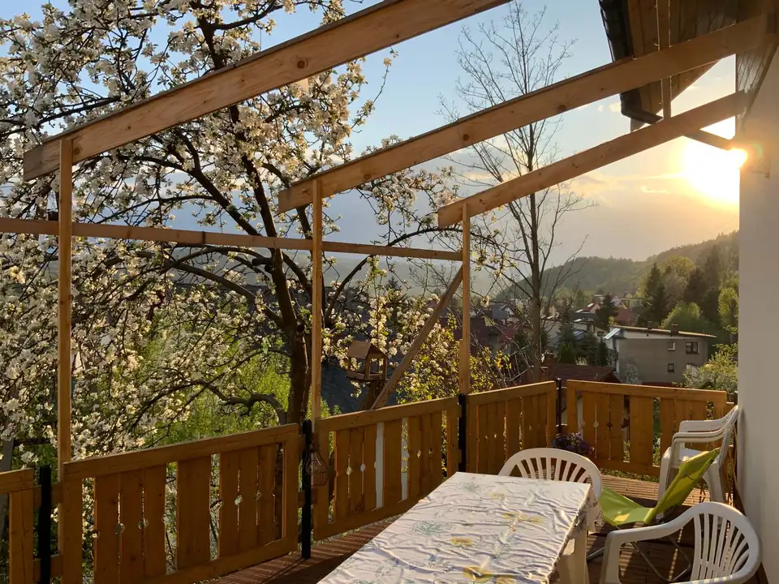
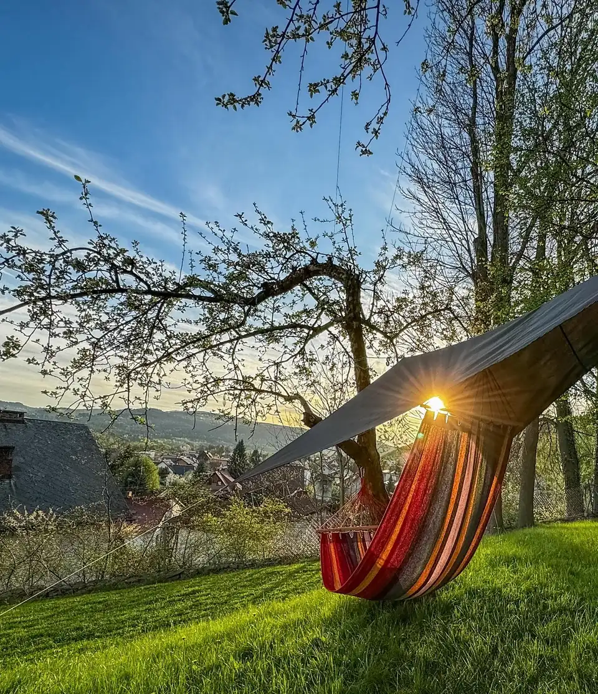
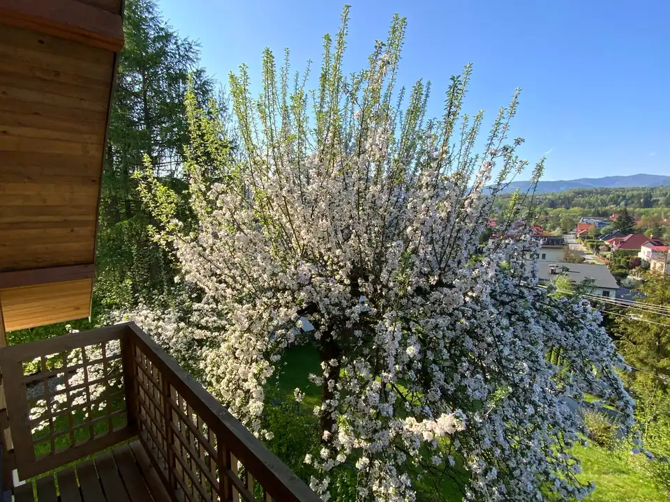

01 / 08 · Miejsce
Dom wśród jabłoni
Jesteśmy niewielkim, rodzinnym przedsięwzięciem z urokliwego Makowa Podhalańskiego. Zajmujemy się tworzeniem naturalnych soków jabłkowych, z pasją oraz troską o środowisko.
Z dala od ruchliwych dróg w sadzie znajduje się nasz dom.





